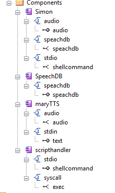
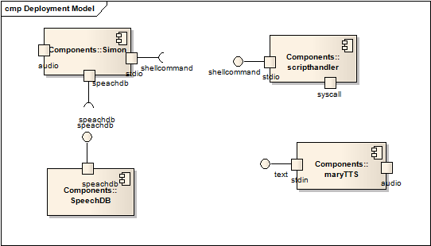

LinJark - Linux-JarKDE Sprachsteuerung für Linux/KDE
Jarvis aus den Ironman-Filmen spricht mit seinem Rechner
Zweck
Ein Nutzer (z.B. Behinderte oder wichtige Leute) möchte seinen Rechner mit Sprachkomandos steuern. Der Rechner soll als elektronischer Butler dienen
Benötigte Komponenten
 
- Simon - Spracherkennung
-
Ubuntu: apt-get install simon
- SpeechDB
-
- MaryTTS - Sprachsynthetisierer - Text to Speech, (GitHub)
-
- LinJarK
-
- Installationskript
- linjark_WETTER_mod -
- SphinxTrain
- erweitert Basismodell um mündliche Eingaben umd die Erkennung zu erhöhnung
Ubuntu: apt-get install SphinxTrain
Begriffe
- Modul
- tar.gz, welches folgende Artefakte enthält:
- .md Markup-Language
-
GitHub Flavored Markdown konvertiert diese als HTML
- Simon Szenario:
- Kombination Wörter - Grammatik - Komando
- .sbm
- Sprachdatenbank : Phonetikmodel mit Stimmvarianzen